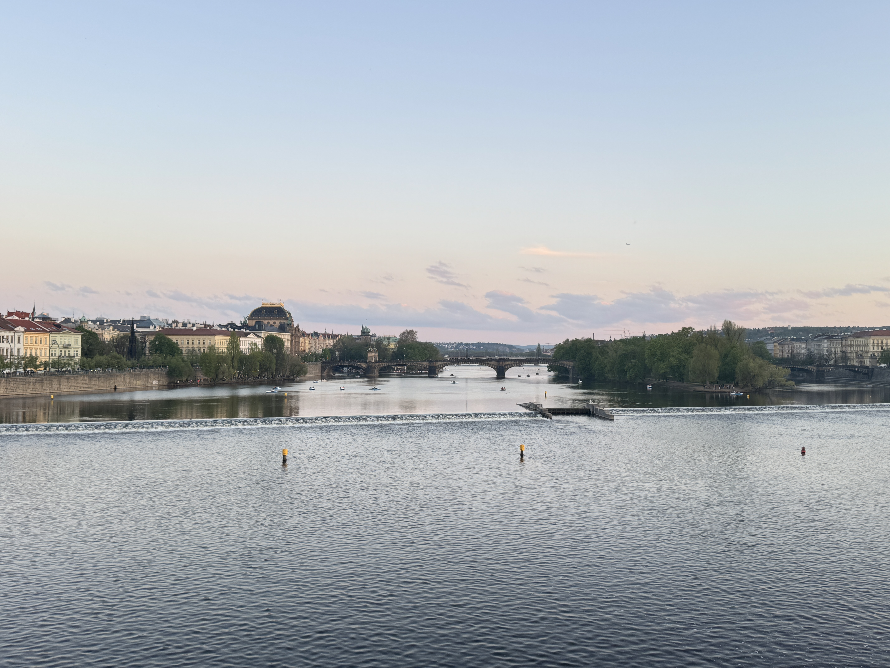
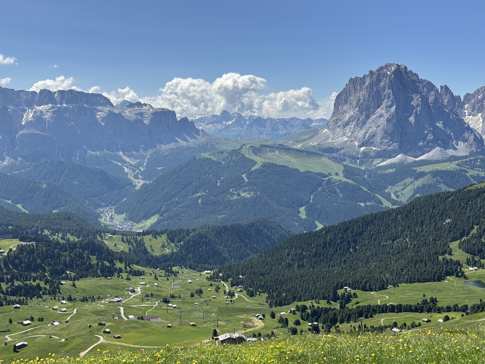

Archivo de Prueba
¡¡ Bienvenido a mi blog de fotos !!
¡Aquí encontrarás una colección de mis fotos favoritas!

Atardecer en ciudad

Paisaje montañoso
 Lago en zona rural
Lago en zona rural
 Atardecer en montañas
Atardecer en montañas
¡Aquí hay algunos enlaces útiles para ti! :
¡Gracias por visitar mi blog de fotos! Espero que hayas disfrutado de la galería.